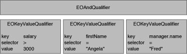

Creating a Qualifier
As described above, there are several EOQualifier subclasses, each of which represents a different semantic. However, in most cases you simply create a qualifier using the EOQualifier class method qualifierWithQualifierFormat :, as follows:
EOQualifier *qual = [EOQualifier qualifierWithQualifierFormat:@"lastName = 'Smith'"];
The qualifier or group of qualifiers that result from such a statement is based on the contents of the format string you provide. For example, giving the format string "lastName = 'Smith'" as an argument to qualifierWithQualifierFormat: returns an EOKeyValueQualifier object. But you don't normally need to be concerned with this level of detail.
The format strings you use to create a qualifier can be compound logical expressions, such as "firstName = 'Fred' AND age < 20". When you create a qualifier, compound logical expressions are translated into a tree of EOQualifier nodes. Logical operators such as AND and OR become EOAndQualifiers and EOOrQualifiers, respectively. These qualifiers conjoin (AND) or disjoin (OR) a group of sub-qualifiers. This is illustrated in Figure 4, in which the format string "salary > 300 AND firstName = 'Angela' AND manager.name = 'Fred'" has been translated into a tree of qualifiers.

Figure 4 EOQualifier Tree for salary > 300 AND firstName = "Angela" AND manager.name = "Fred" Note: The qualifierWithQualifierFormat: method can't be used to create an instance of EOSQLQualifier. This is because EOSQLQualifier uses a non-structured syntax to provide backward compatibility with pre-2.0 Enterprise Objects Framework releases. It also requires an entity. To create an instance of EOSQLQualifier, you'd use a statement such as the following:
myQual = [[EOSQLQualifier alloc] initWithEntity:myEntity format:myFormatString];
Constructing Format Strings
As described above, you typically create a qualifier from a format string by using qualifierWithQualifierFormat: . This method takes as an argument a format string somewhat like that used with the standard C printf() function. The format string can embed strings, numbers, and objects using the conversion specifications listed below. This allows qualifiers to be built dynamically. The following table lists the conversion specifications you can use in a format string and their corresponding data types.
| Conversion Specification | Expected Value or Result |
| %s | A constant C string (const char * ). |
| %d | An int . |
| %f | A float or double . |
| %@ | An id argument. The behavior of this conversion specification depends on its position. It can either be an object whose description method returns a key (in other words, an NSString), or a value such as an NSString, NSNumber, NSCalendarDate, and so on. |
| %% | Results in a literal % character. |
Note: If you use an unrecognized character in a conversion specification (for example, %x), an NSInvalidArgumentException is raised.
For example, suppose you have an Employee entity with the properties empID , firstName , lastName , salary , and department (representing a to-one relationship to the employee's department), and a Department entity with properties deptID, and name. You could construct simple qualifier strings like the following:
lastName = 'Smith'
salary > 2500
department.name = 'Personnel'
The following examples build qualifiers similar to the qualifier strings described above, but take the specific values from already-fetched enterprise objects:
myQualifier = [EOQualifier qualifierWithQualifierFormat:@"%@ = %@",
@"lastName", [anEmployee lastName]];
myQualifier = [EOQualifier qualifierWithQualifierFormat:@"%@ > %f",
@"salary", [anEmployee salary]];
myQualifier = [EOQualifier qualifierWithQualifierFormat:@"%@ = %@",
@"department.name", [aDept name]];
The enterprise objects here implement methods for directly accessing the given attributes: lastName and salary for Employee objects, and name for Department objects.
Note: Unlike a string literal, the %@ conversion specification is never surrounded by single quotes:
// For a literal string value such as Smith, you use single quotes.
[EOQualifier qualifierWithQualifierFormat:@"lastName = 'Smith'", null)];
// For the conversion specification %@, you don't use quotes
[EOQualifier qualifierWithQualifierFormat:@"lastName = %@", @"Jones"];
Typically format strings include only two data types: strings and numbers. Single-quoted or double-quoted strings are NSStrings, non-quoted numbers are NSNumbers, and non-quoted strings are keys. You can get around this limitation by performing explicit casting, as described in the section "Using Different Data Types in Format Strings".
The operators you can use in constructing qualifiers are =, ==, !=, <, >, <=, >=, "like", and "caseInsensitiveLike". The like and caseInsensitiveLike operators can be used with wildcards to perform pattern matching, as described in "Using Wildcards and the like Operator," below.
Checking for NULL Values
To construct a qualifier that fetches rows matching null values, use either of the approaches shown in the following example:
[EOQualifier qualifierWithQualifierFormat:@"bonus = nil"];
[EOQualifier qualifierWithQualifierFormat:@"bonus = %@", [EONull null]];
[EOQualifier qualifierWithQualifierFormat:@"bonus = %@", nil];
Using Wildcards and the like Operator
When you use the like or caseInsensitiveLike operator in a qualifier expression, you can use the wildcard characters * and ? to perform pattern matching, for example:
@"lastName like 'Jo*'"
matches Jones, Johnson, Jolsen, Josephs, and so on.
The ? character just matches a single character, for example:
@"lastName like 'Jone?'"
matches Jones.
The asterisk character (*) is only interpreted as a wildcard in expressions that use the like or caseInsensitiveLike operator. For example, in the following statement, the character * is treated as a literal value, not as a wildcard:
@"lastName = 'Jo*'"// The * character doesn't act as a wildcard in this statement.
Using Selectors in Qualifier Expressions
The format strings you use to initialize a qualifier can include selectors. The parser recognizes a selector as an unquoted string followed by a colon, such as myMethod: . For example:
point1 isInside: area
firstName isAnagramOfString: "Computer"
Selectors in a qualifier are parsed and applied only in memory; that is, they can't be used in SQL generation.
Using Different Data Types in Format Strings
As stated in the section "Constructing Format Strings", format strings normally include only two data types: strings and numbers. To get around this limitation, you can perform explicit casting.
For example, NSCalendarDate and NSDecimalNumber are two classes that are likely to be used in qualifiers. You can construct format strings for objects of these classes as follows:
hireDate = (NSCalendarDate)'1990-03-16 00:00:00 +0000'
salary = (NSDecimalNumber)'15000.02'
When you use this approach, qualifiers are constructed by looking up the class and invoking [[class alloc] initWithString:stringValue]. Therefore, this technique only works for classes that implement initWithString: .
Note that to construct a date qualifier using a format string, you must use the default CalendarDate format, which is %Y-%m-%d %H:%M:%S %z-for example:
EOQualifier *qual = [EOQualifier qualifierWithQualifierFormat:
@"dateReleased < (NSCalendarDate)'1990-01-26 00:00:00 +0000'"];
This limitation doesn't apply when you're working with NSCalendarDate objects-you can just construct a qualifier in the usual way:
EOQualifier *qual = [EOQualifier qualifierWithQualifierFormat:
@"dateReleased > %@", [NSCalendarDate calendarDate]];
Using EOQualifier's Subclasses
You rarely need to explicitly create an instance of EOAndQualifier, EOOrQualifier, or EONotQualifier. However, you may want to create instances of EOKeyValueQualifier and EOKeyComparisionQualifier. The primary advantage of this is that it lets you exercise more control over how the qualifier is constructed, which is desirable in some cases.
If you want to explicitly create a qualifier subclass, you can do it using code such as the following excerpt, which uses EOKeyValueQualifier to select all objects whose "isOut" key is equal to YES. In the excerpt, the qualifier is used to filter an in-memory array.
// Create the qualifier
EOQualifier *qual = [[EOKeyValueQualifier alloc] initWithKey:@"isOut"
operatorSelector:EOQualifierOperatorEqual
value:[NSNumber numberWithBool:YES]];
// Filter an array and return it
return [[self allRentals] filteredArrayUsingQualifier:qual];
filteredArrayUsingQualifier: is a method that Enterprise Objects Framework adds to NSArray. It's used for filtering in-memory arrays.
Creating Subclasses
EOQualifier offers extensibility across two dimensions: new classes can be added to extend qualifier semantics, and categories can be added to extend functionality (for example, to provide in-memory evaluation).
Subclasses used to evaluate objects in memory must implement the EOQualifierEvaluation protocol. Subclasses used to generate SQL queries must conform to the EOQualifierSQLGeneration protocol.